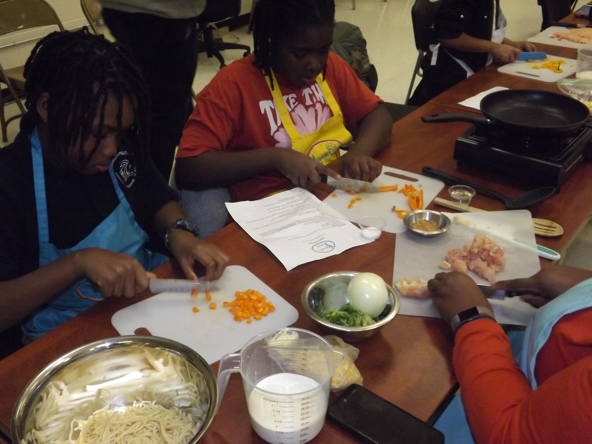
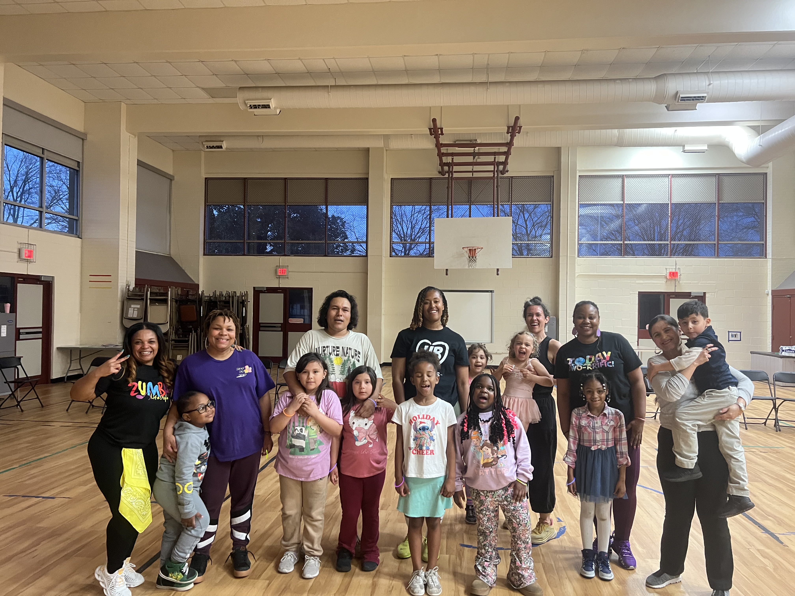

Richmond Public Schools is launching its community schools work by building the Student and Family Engagement (SAFE) Center, a dedicated hub at Clark Springs Elementary designed to serve more than 2,000 families. The implementation team has finalized the physical space and is procuring additional materials and supplies as needed, while continuing to identify people and organizations for partnership and enrichment activities.
The SAFE Center's engagement strategies for addressing non-academic barriers to attendance include food, clothing, physical health support, resource navigation, and education and empowerment sessions. The division's anchor event is the monthly RPS Love Market, a large-scale food pantry that distributes groceries and household staples to families across the division. Health and wellness programming includes free physical health services through partnerships with the Virginia Department of Health, Sentara Health, and Smile Garden Dentistry.
3,000+ families have been served at the RPS Love Market since November


Chef Victoria of Victoria's Kitchen leads a healthy cooking class for more than 40 families and sends them home with the ingredients to prepare the dish themselves. Group fitness classes are part of the center's health and wellness programming, offered free to students and their caregivers as a way to bring families into movement-based activities together.